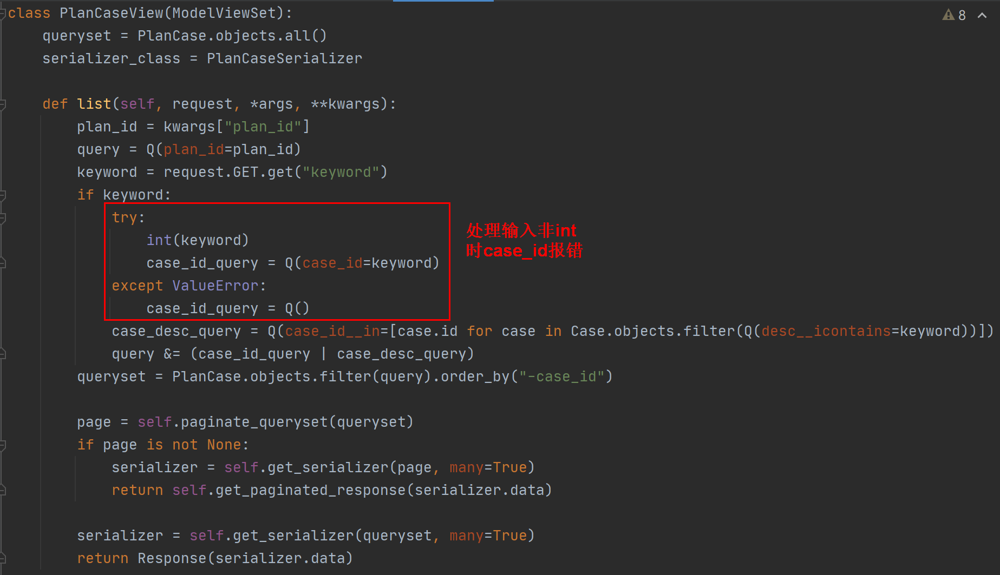
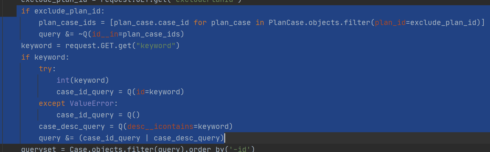
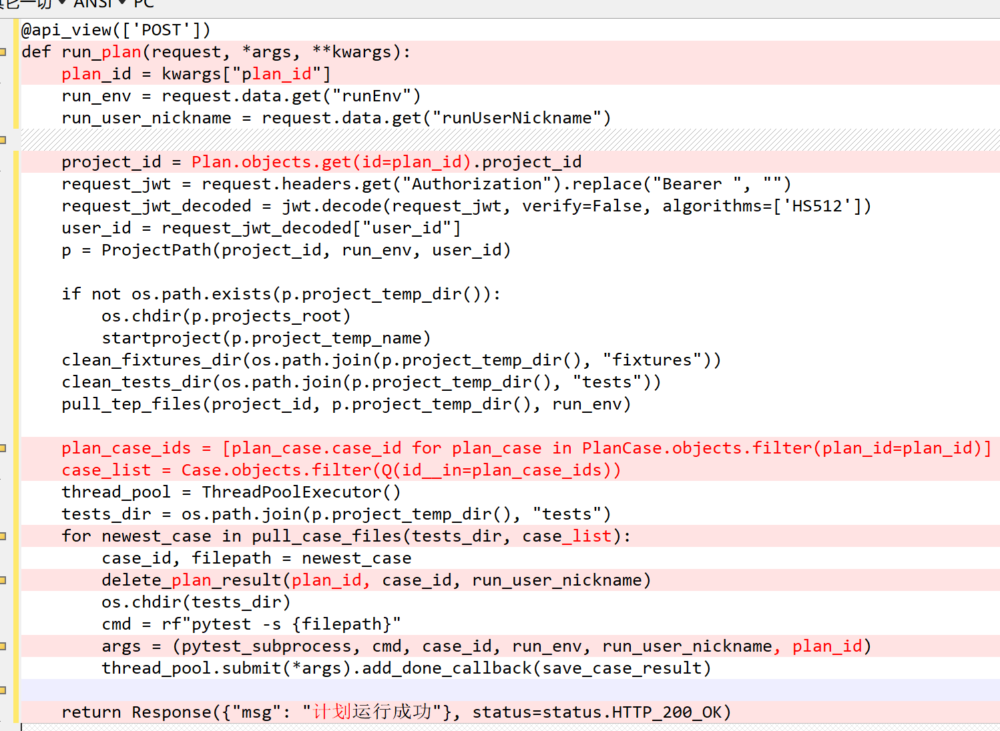

7 teprunner测试平台测试计划批量运行用例¶

本文开发内容¶
上一篇文章已经把pytest引入到测试平台中，通过多线程和多进程的方式，运行测试用例。有了这个基础，做批量运行用例的功能就很简单了，只需要前端传入一个CaseList即可。本文的后端代码是增删改查和复用run_case相关代码做个run_plan。前端代码将学习如何通过LocalStorage在非父子组件之间传递数据。具体开发内容如下：
测试计划增删改查
测试计划动态添加移除测试用例
运行测试计划，批量运行用例
计划运行结果、用例运行结果
编写后端代码¶
编辑teprunner/urls.py文件，添加测试计划的路由：
编辑teprunner/models.py文件，添加3张表的model：
Plan存放测试计划，PlanCase存放计划和用例关联关系，PlanResult和CaseResult类似，这里之所以把单独出来一张结果表，是为了和用例结果CaseResult相互独立，防止计划结果覆盖用例结果，毕竟CaseResult一般是手工跑出来的，PlanResult一般是定时任务跑出来的，功能数据解耦后处理起来也更方便。
编辑teprunner/serializers.py文件，添加序列化器：
为了前端展示需要，这里额外关联了一些字段进行展示。尤其是：
caseNum用例总条数，passedNum成功条数，failedNum失败条数，errorNum错误条数。成功定义为：只有passed，没有failed和error的用例。失败定义为：只有failed，没有error的用例。错误定义为：只要有error的用例。
本文还展示了，如果序列化器的某个字段只在存库时使用，返回响应时不展示，该怎么处理：
重写to_representation方法，把不需要返回的字段pop移出去。这里output在计划运行结果不需要，在用例运行结果才需要，为了减少传输数据，就在计划运行结果的接口响应中移出去了。
最后来写View，新增teprunner/views/plan.py文件：

重写list方法，添加查询条件。重写destroy方法，判断必须先删除关联测试用例，才能删除测试计划。
PlanCaseView类似：

添加add方法：
在添加用例时写入plan_case表。添加remove方法：
在移除用例时从plan_case表删除数据。继续：
result视图用来返回计划运行结果，根据searchType来分别查询用例总条数、成功条数、失败条数、错误条数。
继续：

plan.case_result和case.case_result类似，返回测试计划的每条用例的运行结果。
在测试计划添加用例的时候，有个用例列表，需要增加2个过滤条件，编辑teprunner/views/case.py文件：

第一个过滤条件是排除当前计划已经添加过的用例：exclude_plan_id由前端传入，根据PlanCase关联关系找到已添加的用例进行过滤；第二个查询条件是关键字：用例ID或用例描述，跟PlanCaseView.list()里面一样。
最后，编辑teprunner/views/run.py文件，增加批量运行用例的功能：
添加delete_plan_result方法，在运行用例前，先把已有结果删掉，注意这里的model是PlanResult。继续：
修改pytest_subprocess函数，添加plan_id字段。继续：
修改save_case_result函数，判断没有plan_id就存case_result表，有plan_id就存plan_result表。
复制run_case的代码为run_plan：

修改case相关代码为plan。值得注意的是中间那段代码，根据plan_id从PlanCase中找到关联用例，生成了case_list，这样就复用run_case的多线程和多进程代码，批量运行测试用例了。
编写前端代码¶
编辑src/router/index.js文件，添加测试计划相关路由：
{
path: "plan",
name: "plan",
meta: {
title: "测试计划",
},
component: () => import("@/views/teprunner/plan/PlanManagement.vue"),
children: [
{
path: "addPlan",
name: "addPlan",
meta: {
title: "添加计划",
},
component: () => import("@/views/teprunner/plan/PlanEditor"),
},
{
path: "editPlan",
name: "editPlan",
meta: {
title: "编辑计划",
},
component: () => import("@/views/teprunner/plan/PlanEditor"),
},
{
path: "caseList",
name: "caseList",
meta: {
title: "用例列表",
},
component: () => import("@/views/teprunner/plan/CaseList"),
},
{
path: "planResult",
name: "planResult",
meta: {
title: "计划运行结果",
},
component: () => import("@/views/teprunner/plan/PlanResult"),
children: [
{
path: "caseResult",
name: "caseResult",
meta: {
title: "用例运行结果",
},
component: () => import("@/views/teprunner/plan/CaseResult"),
},
],
},
],
},
跟之前做增删改查不一样的地方是：在父组件中，不会import子组件，而是通过LocalStorage进行组件之间传值。因此这里增加了添加计划、编辑计划等路由。
编辑src/views/teprunner/index.vue文件：
添加测试计划左侧菜单。
新建src/views/teprunner/plan目录，新建src/views/teprunner/plan/PlanManagement.vue文件：
项目环境根据路由不同，分别展示，路由plan是测试计划主页面，同时展示项目和环境。路由addPlan新增计划不需要展示环境。路由editPlan编辑计划，不需要展示环境，且项目不能修改。接着添加了<div>主路由界面，通过v-if来判断是否为主路由。<router-view>是用来展示路由的页面容器，addPlan和editPlan的组件经过主路由的this.$router.push()后，会加载到这个容器里。
就像用例结果一样，我给不同计划结果区分了颜色和链接：
继续：
运行计划和删除计划跟之前写的代码相差不大。
继续：
这就是LocalStorage给组件传数据的关键代码。先存数据，再跳转路由，这个路由会加载到前面添加的<router-view>容器中。
新建src/views/teprunner/plan/PlanEditor.vue文件：
这是新增和修改计划的组件，在created()时读取localStorage中主页面存入的数据。在这个页面继续添加代码：
点击取消按钮后，返回上一级路由：测试计划主页面。
新增或修改后，返回测试计划主页面，需要立即展示新数据：
通过watch来监测，每次路由跳转到plan时，就查询一次表格数据。
新建src/views/teprunner/plan/CaseList.vue文件：
在created()读取数据。这个地方有个弹出框，用到了selection-panel：
这在用户管理，新增用户选择角色时已经介绍过了。此时需要加点东西，添加一个查询条件用来过滤测试用例，编辑src/components/SelectionPanel.vue文件：
添加了总项数，和查询输入框。继续：
这几个组件的函数很多都添加了async关键字，表示异步。这么做是为了页面操作看起来更流畅，防止添加移除频繁操作导致页面卡住。
新建src/views/teprunner/plan/PlanResult.vue文件：
主路由用来展示计划运行结果，子路由用来展示用例运行结果（包含了日志输出）。跳转代码是：
和测试计划主页面方式一样，用到了this.$router.push()。
新建src/views/teprunner/plan/CaseResult.vue文件，内容和src/views/teprunner/case/CaseResult.vue文件基本一样，区别在于现在不是用的弹出框，而是路由到子页面了，可视区域更佳，体验更棒。
小结¶
本文进一步完善了测试平台的功能，除了单条用例运行，还能批量用例运行（催更的小伙伴可以拉代码尝试下哦）。其中有个新技术，前端通过localStorage来给不同组件之间传递数据，这样就可以把弹出框做成了子路由页面 ，然后很方便地点击链接进入子页面，点击面包屑导航返回上级页面。这为fixtures和用例管理中的弹出框优化提供了参考。